기계정비산업기사 (2017-03-05 기출문제)
1과목: 공유압 및 자동화시스템
1. 다음 유압 회로의 명칭으로 옳은 것은?
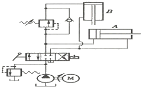
- 시퀀스 회로
- 미터아웃 회로
- 블리드 오프 회로
- 카운터 밸런스 회로
(정답률: 58%)

2. 다음 밸브 기호의 명칭은?
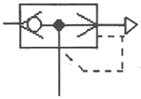
- 급속 배기밸브
- 고압 우선형밸브
- 저압 우선형밸브
- 파일럿 조작 체크밸브
(정답률: 63%)
3. 공기탱크와 공압회로 내의 공기압을 규정 이상으로 상승되지 않도록 하며 주로 안전밸브로 사용되는 밸브는?
- 감압 밸브
- 교축 밸브
- 릴리프 밸브
- 시퀀스 밸브
(정답률: 75%)
4. 토출되는 압축공기가 왕복 운동을 하는 피스톤과 직접 접촉하지 않아 주로 깨끗한 환경에 사용되는 압축기는?
- 격판 압축기
- 베인 압축기
- 스크루 압축기
- 피스톤 압축기
(정답률: 74%)
5. 그림에서 팽창 측과 수축 측의 부하가 같고, 로드륵의 밸브 C를 담았을 때, 압력 P2[kgf/cm2]는? (단, D=50mm, d=25mm, P1=30kgf/cm2 이다.)
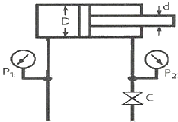
- 4
- 40
- 400
- 4000
(정답률: 75%)
6. 파스칼 원리에 대한 설명으로 옳은 것은?
- 일정한 부피에서 압력은 온도에 비례한다.
- 일정한 온도에서 압력은 부피에 반비례한다.
- 밀폐된 용기내의 압력은 모든 방향에서 동일하다.
- 유체의 운동 속도가 빠를수록 배관의 압력은 낮아진다.
(정답률: 78%)
7. 공압모터의 사용 시 주의사항으로 적절하지 않은 것은?
- 저온에서의 사용 시 결빙에 주의 한다.
- 모터의 진동 및 소음문제로 밸브는 모터에서 먼 곳에 설치한다.
- 윤활기를 반드시 사용하고 윤활유 공급이 중단되어 소손되지 않도록 한다
- 모터의 성능이 충분히 확보되도록 배관 및 밸브는 가능한 유효단면적이 큰 것을 사용한다.
(정답률: 81%)
8. 유압모터의 특징으로 틀린 것은?
- 점도 변화에 영향이 적다.
- 소형ㆍ경량으로서 큰 출력을 낼 수 있다.
- 작동유내에 먼지나 공기가 침입하지 않도록, 특히 보수에 주의하여야 한다.
- 작동유는 인화하기 쉬우므로 화재 염려가 있는 곳에서의 사용은 곤란하다.
(정답률: 81%)
9. 어큐물레이터의 사용 목적이 아닌 것은?
- 일정 압력 유지
- 충격 및 진동 흡수
- 유압 에너지의 저장
- 실린더 추력의 증가
(정답률: 72%)
10. 4포트 3위치 밸브 중 중립 위치에서 펌프를 무부하 시킬 수 있는 것은?
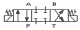
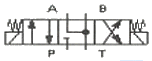
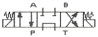
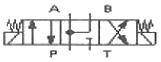
(정답률: 72%)
11. 압력을 검출할 수 있는 센서는?
- 리졸버
- 유도형 센서
- 용량형 센서
- 스트레인 게이지
(정답률: 74%)
12. 시간의 변화에 대해 연속적 출력을 갖는 신호는?
- 디지털 신호
- 접점의 개폐
- 아날로그 신호
- ON-OFF 신호
(정답률: 79%)
13. 스핀들 리드가 20mm이고, 회전각이 180°인 스텝모터의 이송거리[mm]는?
- 5
- 10
- 15
- 20
(정답률: 69%)
14. A1의 면적이 20cm2일 때 이곳에서 흐르는 물의 속도 V1은 10m/sec이다. A2의 면적이 5cm2라면, 이곳에 흐르는 물의 속도 V2[m/sec]는?
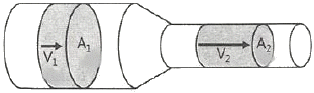
- 2
- 40
- 100
- 1000
(정답률: 83%)
15. 펌프에서 소음이 나는 원인으로 적합하지 않은 것은?
- 공기의 침입
- 이물질의 침입
- 작동유의 과열
- 펌프의 흡입불량
(정답률: 76%)
16. 다음 회로에서 점선 안에 있는 제어기의 명칭은?
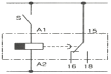
- 카운터
- 플리커 릴레이
- ON 지연 타이머
- OFF 지연 타이머
(정답률: 68%)
17. 2kbit의 단의 변환이 옳은 것은?
- 1024 bit
- 2000 bit
- 128 byte
- 256 byte
(정답률: 74%)
18. 작업요소의 작업순서가 표시되고, 각 요소의 관계는 스템별로 비교될 수 있는 것은?
- 논리도
- 제어선도
- 파레토도
- 변위-단계선도
(정답률: 68%)
19. 두 개의 복동 실린더가 직렬로 하나의 유니트에 조합되어 가압하면 약 2배의 추력을 얻을 수 있는 구조의 실린더는?
- 격판 실린더
- 충격 실린더
- 탠덤 실린더
- 다위치 제어 실린더
(정답률: 84%)
20. 실제의 시간과 관계된 신호에 의해서 제어가 이루어지는 것은?
- 논리 제어
- 동기 제어
- 비동기 제어
- 시퀀스 제어
(정답률: 65%)
2과목: 설비진단관리 및 기계정비
21. 윤활유를 사용하는 목적이 아닌 것은?
- 감마작용
- 냉각작용
- 방청작용
- 응력 집중 작용
(정답률: 83%)
22. 공진(resonance)에 관한 설명으로 옳은 것은?
- 진동 파형의 순간적인 위치 및 시간의 지연
- 수직과 수평 방향으로 동시에 발생하는 진동
- 고유진동수와 강제진동수가 일치할 때 진폭이 증가하는 현상
- 연결된 두 개의 축 중심이 일치하지 않을 때 발생하는 진동
(정답률: 79%)
23. 기계진동의 발생에 따른 문제점으로 가장 관련성이 적은 것은?
- 기계의 수명 저하
- 고유진동수의 증가
- 기계가공 정밀도의 저하
- 진동체에 의한 소음 발생
(정답률: 73%)
24. 제품에 대한 전형적인 고장률 패턴인 욕조곡선 중 우발고장기간에 발생될 수 있는 원인이 아닌 것은?
- 안전계수가 낮은 경우
- 사용자 과오가 발생한 경우
- 스트레스가 기대 이상인 경우
- 디버깅 중에 발견되었던 고장이 발생한 경우
(정답률: 77%)
25. 보전표준의 종류 중 진단(Diagnosis)방법, 항목, 부위, 주기 등에 대한 것이 표준화 대상인 것은?
- 수리표준
- 작업표준
- 설비점검표준
- 일상점검표준
(정답률: 80%)
26. 설비보전 관리시스템의 지속적인 개선을 위한 사이클로 옳은 것은?
- P(계획)-D(실시)-A(재실시)-C(분석)
- P(계획)-D(실시)-C(분석)-A(재실시)
- P(계획)-D(재실시)-A(분석)-C(실시)
- P(계획)-D(재실시)-A(실시)-C(분석)
(정답률: 86%)
27. 로스 계산방법 중 설비의 종합효율과 관계가 가장 적은 것은?
- 양품율
- 에너지 효율
- 시간 가동률
- 성능 가동률
(정답률: 71%)
28. 공압밸브에서 나오는 배기소음을 줄이기 위하여 사용되는 소음 방지장치로 가장 적당한 것은?
- 차음벽
- 진동 차단기
- 댐퍼(damper)
- 소음기(silencer)
(정답률: 88%)
29. 주기(T), 주파수(f), 각진동수(ω)의 관계가 옳은 것은?
- ω=2πT
- ω=2πf
- ω=πT
- ω=πf
(정답률: 78%)
30. 설비보전 자재관리의 활동영역과 거리가 먼 것은?
- 보전자재 범위결정
- 보전자재 재고관리
- 설비 손실(loss)관리
- 구매 또는 제작에 관한 의사결정
(정답률: 63%)
31. 설비보전 보직에 있어서 지역보전의 특징이 아닌 것은?
- 근무시간의 교대가 유기적이다.
- 생산라인의 공정변경이 신속히 이루어진다.
- 1인으로 보전에 관한 전 책임을 지고 있다.
- 보전감독자나 보전 작업원들은 생산계획, 생산성의 문제점, 특별작업 등에 관하여 잘 알게 된다.
(정답률: 74%)
32. 설비 열화 현상 중 돌발고장 현상이 아닌 것은?
- 기계 축 절단
- 전기회로 단선
- 압축기 피스톤 링 마모
- 과부하로 인한 모터 소손
(정답률: 69%)
33. 센서 부착 방법 중 일반적인 에폭시 시멘트 고정의 특징으로 틀린 것은?
- 고정이 빠르다.
- 먼지와 습기가 많아도 접착에는 문제가 없다.
- 사용할 수 있는 주파수 영역이 넓고 정확도와 안전성이 좋다.
- 에폭시를 사용할 경우 고온에서 문제가 발생할 수 있다.
(정답률: 81%)
34. 기계의 공진을 제거하는 방법으로 맞지 않은 것은?
- 우발력을 증대시킨다.
- 기계의 강성을 보강한다.
- 기계의 질량을 바꾸어 고유진동수를 변화시킨다.
- 우발력의 주파수를 기계의 고유진동수와 다르게 한다.
(정답률: 66%)
35. 품질 개선 활동 시 사용하는 현상 파악 방법 중 공정에서 취득한 계량치 데이터가 여러개 있을 때 데이터가 어떤 값을 중심으로 어떤 모습으로 산포하고 있는가를 조사하는데 사용하는 방법은?
- 산정도
- 그래프
- 파레토도
- 히스토그램
(정답률: 57%)
36. 작업이 표준화되고 대량생산에 적합한 설비배치로 일면 라인별 배치라고도 하는 것은?
- 기능별 설비배치
- 제품별 설비배치
- 혼합형 설비배치
- 제품 고정형 설비배치
(정답률: 79%)
37. 설비보전의 발전 순서가 올바르게 나열된 것은?
- 사후보전 → 예방보전 → 생산보전 → 개량보전 → 보전예방 → TPM
- 예방보전 → 생산보전 → 사후보전 → 개량보전 → TRM → 보전예방
- 사후보전 → 예방보전 → 생산보전 → 개량보전 → TRM → 보전예방
- 예방보전 → 생산보전 → 사후보전 → 개량보전 → 보전예방 → TPM
(정답률: 62%)
38. 회전기계에서 발생하는 이상 현상 중 언밸런스나 베어링 결함 등의 검출에 가장 널리 사용되는 설비진단 기법은?
- 진동법
- 오일분석법
- 응력해석법
- 페로그래피법
(정답률: 78%)
39. 설비배치 개혁이 필요한 경우가 아닌 것은?
- 시제품 제조
- 작업장 축소
- 재 공장 건설
- 작업 방법 개선
(정답률: 71%)
40. 정비계획을 수립할 때 주어진 조건을 조합하여 최적 보수비용, 최적 수리 시기 등을 결정한다. 이 때 주어진 조건이 아닌 것은?
- 계측관리
- 생산계획
- 설비능력
- 수리형태
(정답률: 48%)
3과목: 공업계측 및 전기전자제어
41. 3상 유도전동기의 정ㆍ역 동시 투입에 의한 단락사고를 방지하기 위하여 사용하는 회로는?
- 인터록 회로
- 자기유지 회로
- 플러깅 회로
- 시한동작 회로
(정답률: 81%)
42. 미리 정해진 공정에 따라 제어를 진행하는 것은?
- 정치제어
- 추종제어
- 비율제어
- 프로그램제어
(정답률: 83%)
43. 직류기의 3대 요소는?
- 계자, 전기자, 보주
- 전기자, 보주, 전류자
- 계자, 전기자, 정류자
- 전기자, 정류자, 보산권선
(정답률: 87%)
44. 5kgf/cm2와 같은 압력은?
- 50 mHg
- 3.68 mAq
- 61.1 psi
- 490 kPa
(정답률: 60%)
45. 블록선도에서 블록을 잇는 선은 무엇을 표시하는가?
- 변수의 흐름
- 대상의 흐름
- 공정의 흐름
- 신호의 흐름
(정답률: 73%)
46. 인덕턴스 회로의 설명으로 틀린 것은?
- 전압은 전류보다 위상이 90° 앞선다.
- 전압과 전류는 동일 주파수의 정현파이다.
- 코일은 일반적으로 순수한 L값만을 가진다.
- 전압과 전류의 실효치의 비는 XL=ωL과 같다.
(정답률: 59%)
47. 액위 측정장치로서 원리와 구조가 간단하며 고온 및 고압에도 사용할 수 있어 공업용으로 많이 쓰이는 직접식 액위계는?
- 압력식 액위계
- 기포식 액위계
- 초음파식 액위계
- 플로트식 액위계
(정답률: 55%)
48. 다음의 특성방정식을 갖는 시스템의 안정도는?
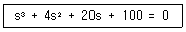
- 안정하다.
- 불안정하다.
- 고주파 영역에서만 안정하다.
- 안정, 불안정 연부를 파악할 수 없다.
(정답률: 70%)
49. 최대눈금의 1% 확도를 갖는 0~300V 전압계를 사용해서 측정한 전압이 120V 일 때 제한 오차를 백분율로 계산하면 약 몇 % 인가?
- 1.0
- 1.5
- 2.0
- 2.5
(정답률: 52%)
50. 온도가 변화함에 따라 저항 값이 변화하는 특성을 이용하여 온도를 검출하는데 사용되는 반도체는?
- 발광 다이오드
- CdS(황화 카드뮴)
- 배리스터(Varistor)
- 서미스터(thermistor)
(정답률: 81%)
51. 불대수의 법칙으로 틀린 것은?
- A+1=1
- Aㆍ1=A
- A+Ā=A
- AㆍĀ=0
(정답률: 61%)
52. 그림과 같은 반전 증폭기의 입력전압과 출력 전압의 비 즉, 전압이득을 옳게 표현한 식은?
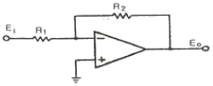
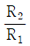
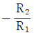
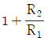
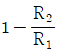
(정답률: 65%)
53. 직류 직권 전동기의 벨트운전을 금하는 이유는?
- 출력이 감소하므로
- 손실이 많이 발생하므로
- 과대 전압이 유기되므로
- 벨트가 벗겨지면 무구속 속도가 되므로
(정답률: 77%)
54. 논리식 Y=AㆍĀ+B를 간단히 한 식은?
- Y=A
- Y=B
- Y=Ā+B
- Y=1+B
(정답률: 70%)
55. 잔류편차를 제거하기 위해 사용하는 제어기는?
- 비례제어
- ONㆍOFF제어
- 비례적분제어
- 비례미분제어
(정답률: 69%)
56. 연산증폭기(op-amp)의 입력단과 출력단의 구성은?
- 1개의 입력과 1개의 출력
- 1개의 입력과 2개의 출력
- 2개의 입력과 1개의 출력
- 2개의 입력과 2개의 출력
(정답률: 78%)
57. 이상적인 연산 증폭기의 특징이 아닌 것은?
- CMRR=∞
- 전압이득=0
- 출력 임피던스=0
- 입력 임피던스=∞
(정답률: 70%)
58. 단상 교류 전력 측정법과 가장 관계가 없는 것은?
- 2전력계법
- 3전압계법
- 3전류계법
- 단상 전력계법
(정답률: 60%)
59. 40Ω의 저항에 5A의 전류가 흐르면 전압은 몇 V인가?
- 8
- 100
- 200
- 400
(정답률: 76%)
60. 유접점 방식의 시퀀스제어에 사용되는 것은?
- 다이오드
- 트랜지스터
- 사이리스터
- 전자개폐기
(정답률: 59%)
4과목: 기계정비 일반
61. 배관계통의 정비를 위하여 분해할 필요가 있는 곳에 사용하는 관 이음쇠로 맞는 것은?
- 니플
- 엘보우
- 레듀셔
- 유니언
(정답률: 71%)
62. 다음 V-벨트의 종류 중 단면이 가장 작은 것은?
- A형
- B형
- E형
- M형
(정답률: 74%)
63. 체인을 걸 때 이음 링크를 관통시켜 임시 고정시키고 체인의 느슨한 측을 손으로 눌러보고 조정해야 하는데 아래 그림에서 S-S' 가 어느 정도일 때 가장 적당한가?
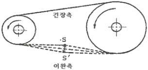
- 체인 폭의 1~2배
- 체인 폭의 2~4배
- 체인 피치의 1~2배
- 체인 피치의 2~4배
(정답률: 71%)
64. 용적형 펌프의 종류가 아닌 것은?
- 기어 펌프
- 베인 펌프
- 나사 펌프
- 터빈 펌프
(정답률: 56%)
65. 임펠러(impeller)의 진동원인으로 가장 거리가 먼 것은?
- 임펠러(impeller)의 부식마모
- 임펠러(impeller)의 낮은 회전수
- 임펠러(impeller)의 질량 불평형
- 임펠러(impeller)에 더스트(dust) 부착
(정답률: 72%)
66. 송풍기 축의 설치와 조정 방법으로 가장 적당한 것은?
- 베어링 케이스와 축 관통부 축과의 틈새의 차가 0.5mm이하이어야 한다.
- 베어링 케이스와 축 관통부 축과의 틈새의 차가 0.5mm이상이어야 한다.
- 전동기 축과 반 전동기축의 수평부에 수준기를 놓고 수준기의 좌ㆍ우의 구배의 차가 0.2mm 이하이어야 한다.
- 전동기 축과 반 전동기축의 수평부에 수준기를 놓고 수준기의 좌ㆍ우의 구배의 차가 0.⑤mm 이하이어야 한다.
(정답률: 58%)
67. 펌프를 정격유량 이하의 부분유량으로 운전 시 발생되는 현상이 아닌 것은?
- 임펠러에 작용하는 추력의 증가
- 차단점 부근에서 펌프 과열현상 발생
- 고 양정 펌프는 차단점 부근에서 수온저하 발생
- 특성곡선의 변곡점 부근에서 소음 밎 진동발생
(정답률: 50%)
68. 효율이 높은 터보 팬의 베인 방향으로 맞는 것은?
- 사류 베인
- 횡류 베인
- 후향 베인
- 가벽익 배인
(정답률: 73%)
69. 나사의 피치가 2mm이고, 2줄 나사일 때 리드는 몇 mm인가?
- 1
- 2
- 3
- 4
(정답률: 83%)
70. 압축기에 부착된 밸브의 조립에 관한 사항으로 틀린 것은?
- 밸브 홀더 볼트는 각각 서로 다른 토크로 잠근다.
- 밸브 컴플릿(complete)을 실린더 밸브 홈에 부착한다.
- 실린더 밸브 호의 시트 패킹의 오물을 청소한 후 조립한다.
- 시트 패킹을 물고 있지는 않은가 밸브를 좌우로 회전시켜 확인한다.
(정답률: 78%)
71. 글로브 밸브의 일종으로 L형 밸브라고도 하며 관의 접속구가 직각으로 되어 있는 밸브는?
- 체크밸브
- 앵글 밸브
- 게이트 밸브
- 버터플라이 밸브
(정답률: 77%)
72. 열박음 가열 작업 시 주의사항으로 틀린 것은?
- 조립 후 냉각할 때는 급냉 해서는 안 된다.
- 중심에서 둘레로 서서히 균일하게 가열한다.
- 대형부품을 열박음 할 때는 기중기를 사용한다.
- 250℃ 이상으로 가열하면 재질의 변화가 변형이 발생한다.
(정답률: 65%)
73. 운전 중에 두 축을 결합시키거나 떼어 놓을 수 있도록 한 축이음은?
- 클러치(clutch)
- 스플라인(spline)
- 커플링(coupling)
- 자재이음(universal joint)
(정답률: 66%)
74. 스패너를 사용하여 볼트를 체결할 때 힘이 작용하는 점까지의 스패너 길이를 L, 볼트에 작용하는 토크를 T라 하면 가하는 힘 F는?
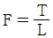
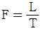
- F=L2×T
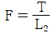
(정답률: 67%)
75. 왕복펌프의 종류가 아닌 것은?
- 기어 펌프
- 피스톤 펌프
- 플런저 펌프
- 다이어프램 펌프
(정답률: 58%)
76. 센터링 불량으로 인한 현상이 아닌 것은?
- 기계 성능이 저하 된다.
- 축의 진동이 증가한다.
- 동력의 전달이 원활하다.
- 베어링부의 마모가 심하다.
(정답률: 83%)
77. 프로펠러의 양력으로 액체의 흐름을 임펠러에 대해 축 방향으로 평행하게 흡입, 토출하는 것으로 대구경, 대용량이며 비교적 낮은 양정(1~5m)이 필요한 곳에 사용되는 펌프는?
- 기어 펌프
- 수격 펌프
- 원심 펌프
- 축류 펌프
(정답률: 65%)
78. 소음과 진동이 적고 역전을 방지하는 기능을 가지고 있으며 효율이 낮고 호환성이 없는 기어는?
- 웜 기어
- 스퍼 기어
- 베벨 기어
- 하이포이드 기어
(정답률: 71%)
79. 기어의 표면피로에 의한 손상으로 가장 적합한 것은?
- 습동 마모
- 피이닝 항복
- 파괴적 피칭
- 심한 스코어링
(정답률: 53%)
80. 직접측정기가 아닌 것은?
- 측장기
- 마이크로미터
- 다이얼 게이지
- 버니어 캘리퍼스
(정답률: 63%)